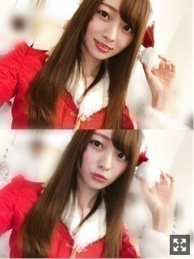
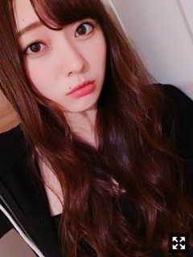
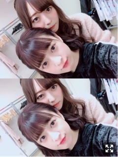
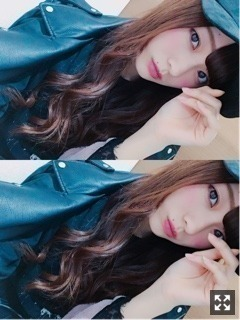

雨のち雪と晴れ女。梅澤美波
みなさま こんにちは！！
乃木坂46 ３期生の
梅澤美波です！！

サンタです、もうすぐクリスマスですね
寒くなってきたけど
皆様元気してますか？☺︎
１年で１番好きな１２月がやってきて
ワクワクしています
この間ひとり鍋したの！（笑）
初だよひとりなんて( .. )
寂しかったけど美味しくてたくさん食べちゃった〜（笑）
食べたいと思ったらすぐ出掛けて買い物行って材料買ってくる人！行動力！
冬はお鍋が食べたくなりますね☺︎
いいお洋服に出会えないのが最近の悩み！
あ、でもやっとコート買えた☺︎！
黒のロングコートで袖がかわいいんだ〜
充実してる毎日が幸せ☺︎
今夜はみなさん
有線大賞をテレビの前で構えて見ましょうね☺︎
生誕Ｔシャツ販売開始しました！
デザイン見ていただけましたか？( .. )
初めての生誕Ｔシャツなので
私らしいものにしたくて
少しずつポイントを入れてみました☺︎
柄や全体のデザインは手描きのままの印刷にしてもらいました！
線を真っ直ぐに、とか
黒で塗りつぶしてあるところは綺麗に、とか
お願いすればできたのだけど
手書き感が欲しかったのと
きっちりし過ぎずにしたかったのでこのままお願いしました◎
背面のポイントのイラストは
文字の部分に注目して欲しくて
アルファベットの文字に遊び心入れました（笑）
見てみてください◎（笑）
気づいた方いるかな〜
デザインの意味もちゃんとあります！
男性の方は着にくいかな？って思ったけど
男の方がこういうの着てたら
素敵だなあって思ってあえて( .. )
ちょっくらコンビニへ、とか
ちょっくら散歩へ、とか
寝巻きとか、
もちろん私服とか、、
使いやすいようにぜひ着ていただきたいです( ˙_˙ )
私もレッスンとかでめちゃくちゃ着ると思う！お揃いしよ〜☺︎
次の握手会は１２／２３の宮城！
雪降ってるのかなあ、わくわくです
久しぶりにお話できますね☺︎
すごく楽しみです☺︎
サンタさんになろうと思います！
少し早めのクリスマスを一緒に過ごせて嬉しいなあ〜
来られない方は写真待っててね☺︎☺︎
トナカイとか着ようかと思ったけど
サンタさん見たい方の方が多いかなあって思ったので、サンタはサンタでもいくつか種類の違うものを着ますね☺︎
来られる方は気をつけてね(；＿；)
厚着してくるんだよ〜

なんかおもしろい顔〜
先日、じゅんなさんの舞台
「牙狼＜GARO＞-神ノ牙 覚醒-」
観にいってきました！
もう本当に素敵でした(；＿；)
じゅんなさんの演技が大好き！って改めて思った、、( .. )
可愛くてカッコ良くて、
私が好きな女性像そのものでした、( .. )
じゅんなさんの舞台を見たのは犬夜叉以来２回目で、
犬夜叉を観たとき衝撃を受けて
「MIDSUMMER CAROL ガマ王子 vs ザリガニ魔人」を観に行けなかったので
この舞台への出演が発表されたときから本当に楽しみにしてて
やっと観れて嬉しかったです( .. )
私、言ってはいなかったんだけど（笑）
弟の影響で仮面ライダーを電王あたりから
ずっと観てて好きだったので
なんかすごく興奮しちゃった（笑）
舞台の音楽も素敵で
演出もすごくて惹き込まれていって
感情移入しちゃって後半ずーっと涙止まらんくなった（笑）
本当に素敵でした(；＿；)
じゅんなさんお疲れ様でした☺︎♡
最近料理したくってね
作りたいレシピのリスト作っていて
料理上手くなりたいなあ〜と思って☺︎
料理コーナーみたいなの作る( ˙-˙ )౨
写真載せる( ˙-˙ )౨
お皿を集めたいんじゃ〜
だから待っててください〜

うしろからぎゅー
これはAGESTOCKのときです☺︎
質問コーナー◎
Q.みなみんが好きな楽曲衣装は？
女の子☺︎
Q.冬のボディケアどうしてる？
A.次の日肌をスベスベにしたい！っていうとき、撮影とか握手会前日の日にボディスクラブをして、お風呂から上がったらオイルでマッサージします！ちなみにオイルはバニラの香り〜癒されるよ☺︎特に足！疲れちゃってもう無理って日はボディクリームをさっと塗って寝ます、普通の事しかしてない(.. )ボディクリームは色々あるからその日の気分で変えます！
告知◎
〜雑誌
▽アップトゥボーイ さま
ソログラビア
▽EX大衆 さま
梅桃対談
発売中です！
▽１２／１５ EX大衆 さま
ソログラビアです！ありがたいです本当に、、。東京からすこし離れたところへ行って、海や駅などで撮影してきました！心が穏やかになりました、楽しくって幸せでした☺︎たくさん笑ったなあ〜自然と触れ合ってこんな所に住んでみたいなって思えるような場所、素敵でした☺︎そしてミラクルの連続でした！誌面でぜひ！
▽１２／１８ 月刊ヤングマガジン さま
３期生全員で登場させて頂きました！乃木坂加入して間もない頃も３期生で出させていただいて、懐かしさを感じます、、。３チームに分かれそれぞれのテーマでの撮影でした！ぜひ☺︎
▽ BUBKA さま
こちらもソログラビアです、、ありがたいです、本当に嬉しい。素敵な撮影ハウスで撮っていただきました！お洋服がもうとんでもなく可愛くて(；＿；)めちゃくちゃどタイプだった！ぜひ見てください！
発売日解禁次第お伝えします！
▽ １２／２１ OVERTURE さま
ももことペアです！梅桃です！念願の２人での撮影！連載以来！楽しすぎた〜ももこずっとテンション高かった〜楽しすぎた〜幸せだった〜お洋服がもう素敵すぎて着られて幸せだった〜カッコイイ梅桃が見られると思います！
▽ B.L.T. さま
３期生全員で載せていただきます！
盛りだくさんだよ〜あまり詳しく言えないんだけどね( .. )
発売日解禁次第お伝えします！
〜TV
▽１２／５、１２／１２BOMBER-E さま
◎梅澤、大園、佐藤の３人は名古屋CBCラジオ、ナガオカ×スクランブルにも登場させて頂きます！ナガオカさん面白すぎてとんでもなかった〜終始笑った楽しいラジオでした☺︎☺︎！
よろしくお願い致します☺︎
お知らせ沢山できて嬉しい限りです。
雑誌のお仕事だいすき！
もっともっと頑張ります。
今日はあの子と二人のお仕事、
ある所へ来ました。☺︎
解禁でき次第お知らせします◎
早く言いたい〜( ¨̮ )
つい先日、２日連続でももこと２人でのお仕事があってね、
お仕事終わり２日ともお出かけしたの☺︎☺︎
１日目は映画を観たのね、
怖い映画だったんだけど
怖すぎて耐えられなくて２人してびびりまくりで（笑）
でもやっぱ一緒にいると楽しいんだ〜
牛タンもたべたよ〜
以上。（笑）
もううめはピエロさんトラウマやで〜
牛タンめちゃくちゃ食べたくせに
わりと直後に
ポップコーンとポテトたべる２人
この間またまた
ファンレター受け取ってきました☺︎
ありがとう、もう全部読んだ( ¨̮ )
みんなの今が知れて頑張ってて
私も頑張ろうって思うし
全握でペアになった子のファンの方からお礼のお手紙とか
SHOWROOMからずっと応援してくださってる方からのお手紙とか
握手会に来て下さる方からのお手紙とか
たくさんあって嬉しい限りです。
初めましての方からのお手紙も、
知ってる名前の方からのお手紙も
全部全部嬉しい、宝物です。
ありがとう
今年ももうあと１ヶ月切りましたね、
なんだか早すぎてもう( .. )
２０１７年最後まで満喫するぞー！
先日のスペイベお越し下さった方
ありがとうございました！
相変わらず楽しかったです〜( ¨̮ )
ゆっくりお話出来ていいものですね☺︎
ずっと楽しみにしてたんだ〜
ゲーム会と、お茶会&似顔絵会！
黒ひげくんはいくらやっても慣れない〜（笑）
びっくりしちゃう（笑）
それも楽しいんだけどね☺︎（笑）
似顔絵も下手くそでごめんね〜( .. )（笑）
あれでも頑張って書いてるのよ〜( .. )（笑）
でも、
私自身がファンの方の気持ちを、お願いを、
全部全部叶えようとして
皆様に誤解をさせてしまうようなことがあったかもしれません。
少なくとも私は、ファンの皆様を悲しませるようなルールを破るようなことは絶対にしません。
これだけは信じていただきたいです。
いつも元気をたくさんくれる、
大好きなファンの皆様とこれからもたくさん素敵な思い出が作れるよう
気持ちを改め今後も頑張ります！
これからもよろしくお願い致します( .. )

ある日の休日のうめざわです
それでは、おやすみなさい
ばいばい☺︎
皆様にお会いできるの、
楽しみにしています。
いつも本当にありがとうございます。
風邪ひかないようにね、
皆様今週もがんばろな☺︎
Original：https://www.nogizaka46.com/s/n46/diary/detail/42024?ima=0517&cd=MEMBER